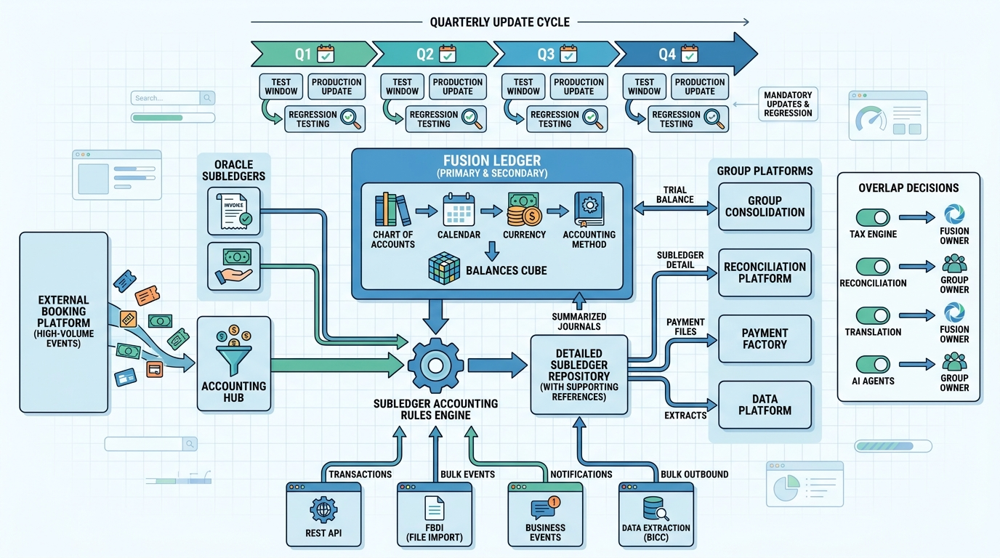

Part II — PLATFORMS: What Each Is For, and What It Costs to Depend On
Oracle Fusion: An Accounting Hub for High-Volume Events

Image generated by Google Gemini (gemini-3-pro-image-preview)
Part II — PLATFORMS: What Each Is For, and What It Costs to Depend On

Image generated by Google Gemini (gemini-3-pro-image-preview)